ML model to predict patient with heart disease
using the RandomForest, Linear SVC classifier.
Data Source: Kaggle
Libraries and Packages: Scikit-learn, Python-Numpy, Pandas
Keywords:
AUC: Area Under the Curve
Fpr-False Positive rate
Tpr-True Positive rate
Outline
Understanding the objective
Methodology
1. Data Setup
2. Data Cleaning
3. Creating a feature matrix
4. Choosing the right model and hyperparameters
5. Model Evaluation
6. Saving and Loading
7. Summary of Results
Objective
The objective of this project is to provide a technology to determine the prices of new cars that is being produced. Employing the use of predictions models will help to set the most accurate prices for cars based on market value. thereby leading to better growth and outcomes for manufacturers.
Features
Age: displays the age of the individual.
sex: displays the gender of the individual using the following format :
1 = male
0 = female
Chest-pain type: displays the type of chest-pain experienced by the individual using the following format :
1 = typical angina
2 = atypical angina
3 = non — anginal pain
4 = asymptotic
Resting Blood Pressure: displays the resting blood pressure value of an individual in mmHg (unit)
Serum Cholestrol: displays the serum cholesterol in mg/dl (unit)
Fasting Blood Sugar: compares the fasting blood sugar value of an individual with 120mg/dl.
If fasting blood sugar > 120mg/dl then : 1 (true)
else : 0 (false)
Resting ECG : displays resting electrocardiographic results
0 = normal
1 = having ST-T wave abnormality
2 = left ventricular hyperthrophy
Max heart rate achieved : displays the max heart rate achieved by an individual.
Exercise induced angina :
1 = yes
0 = no
ST depression induced by exercise relative to rest: displays the value which is an integer or float.
Number of major vessels (0–3) colored by flourosopy : displays the value as integer or float.
Thal : displays the thalassemia :
3 = normal
6 = fixed defect
7 = reversible defect
Target Variable: The target shows the diagnosis of heart disease : Displays whether the individual is suffering from heart disease or not :
0 = absence
1 = present
The score is being used as a conditional statement for classification as viewed in the deployed model section.
1.Data Setup
Pip installing the dependencies.
Importing the dataset and required libraries
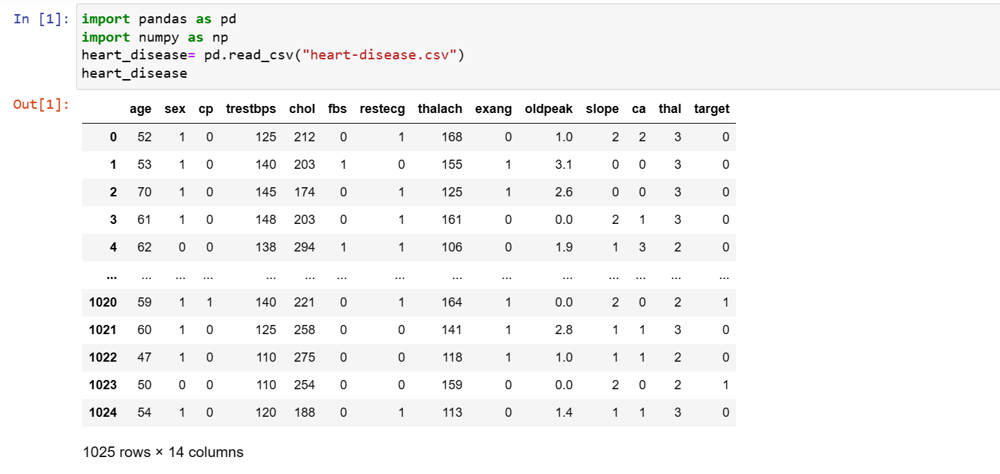
2. Data Cleaning
The data was inspected for null values to remove abnormality. However, the dataset showed no missing values.
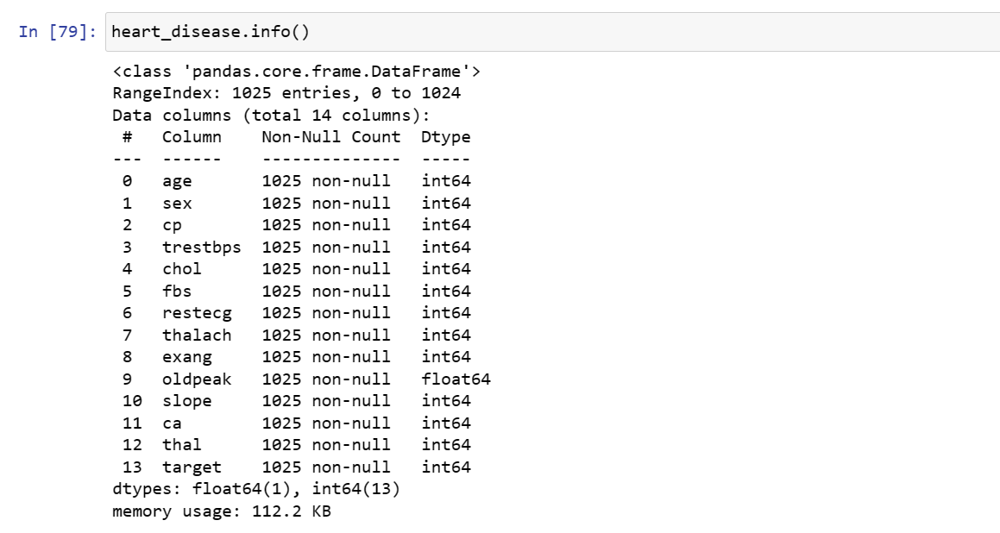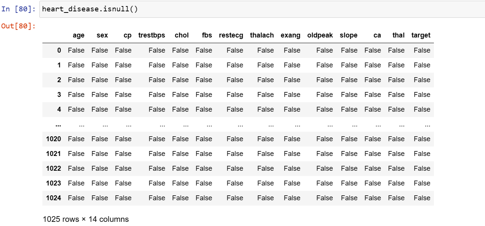
3. Creating a feature matrix
Data was split into x and y to separate features to be trained from the target .
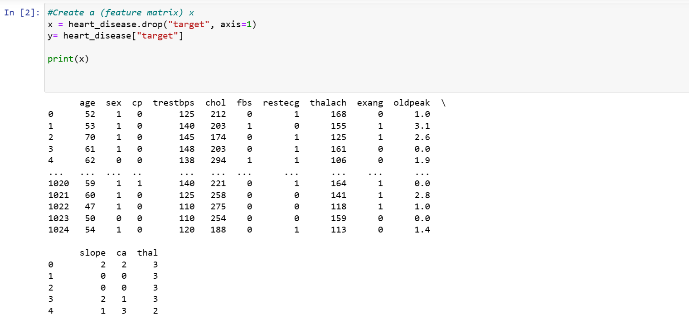
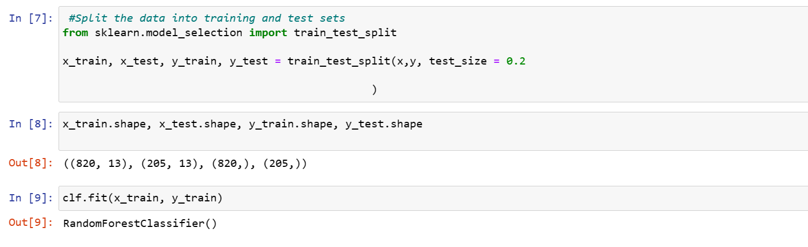
The Random Forest classifier and Linear SVC was chosen as an estimator as prescribed by the scikit learn sheet in the documentation above. The x data was split into training and testing,the data used in training is about 20% indicated by test_size=0.2.The shape of the model was examined and the model fit into train-data.
RandomForest Classifier
5. Model Evaluation
The confusion matrix and scoring parameters were adopted in evaluating this model. The classification result shows an 100% indicating the RandomForest model is a perfect one.
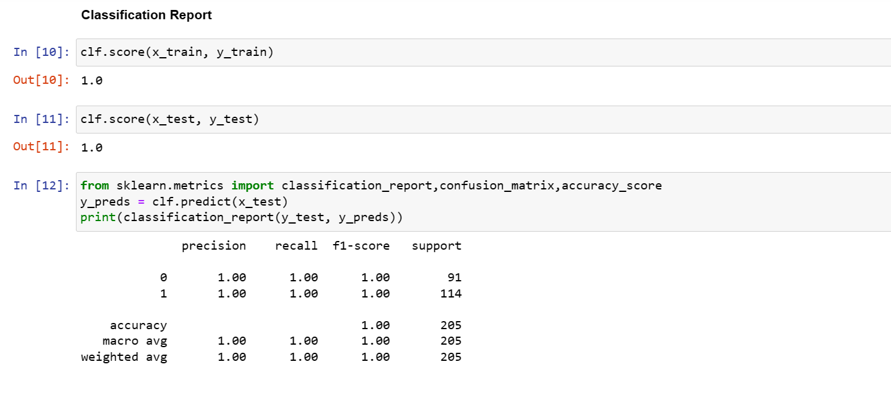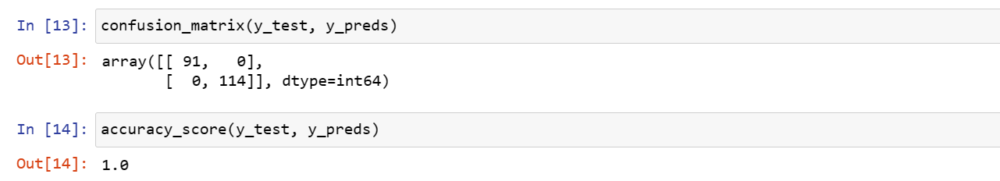
The Confusion matrix summary shows the same result with the classification report showing that the classification is accurate.
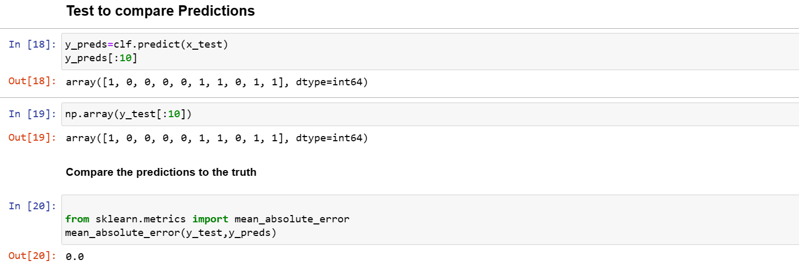
The mean absolute error for the predicted value or its likely deviation from the original value is 0.0.. which is perfect.
Scoring Parameters
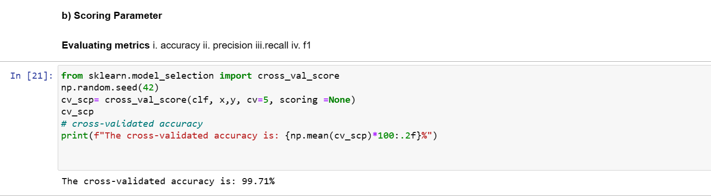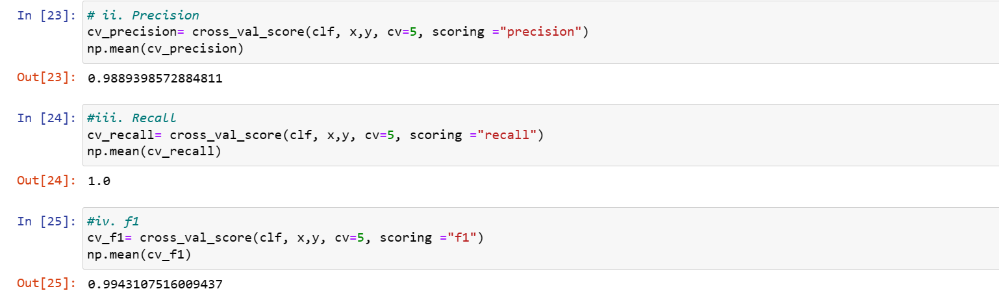
Linear SVC
The LinearSVC gave a score of 79.5%. This means about 80% of the data should be accurate
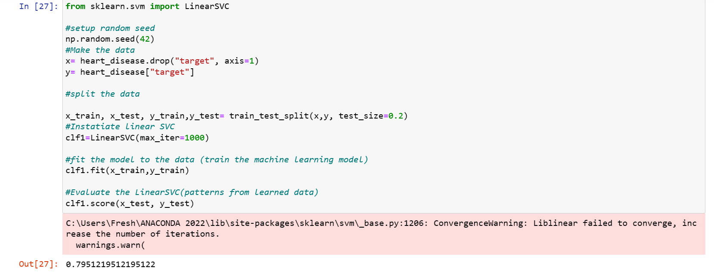
Evaluating the Linear SVC model
Evaluation Metrics
Score Parameters: 'accuracy', 'average precision', 'recall', 'f1'
Metric functions AUC/ROC score , ' Confusion matrix, Classification report
1. Source Parameter- cross_validation
On the LinearSVC:
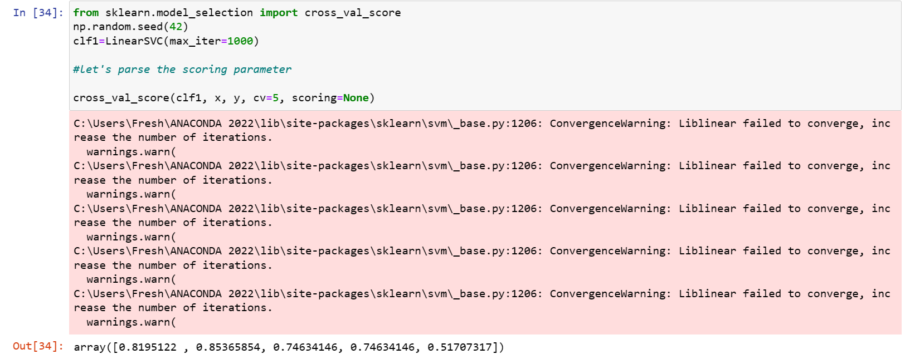
On the RandomForest
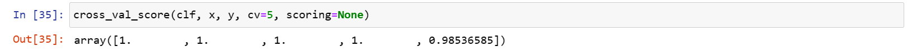
Accuracy
LinearSVC
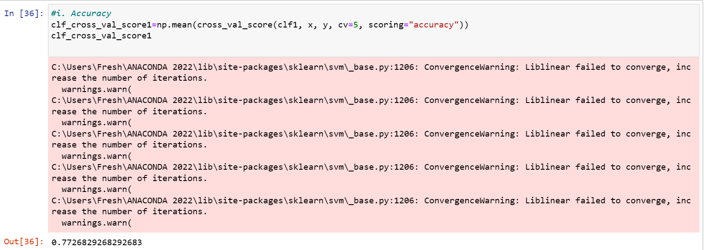
RandomForest
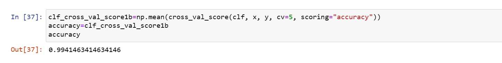
Recall
LinearSVC
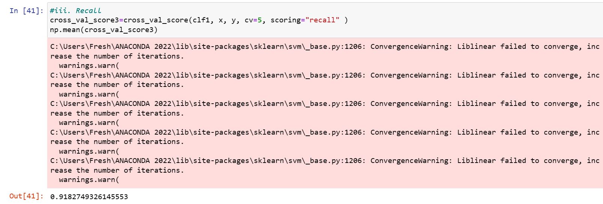
RandomForest
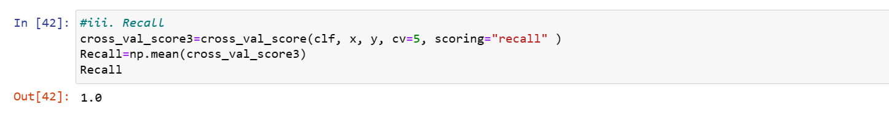
F1
LinearSVC
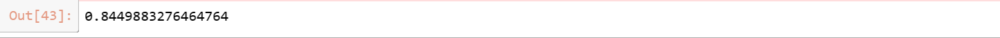
RandomForest
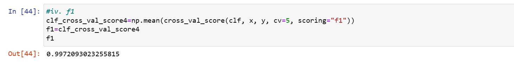
From several iterations,the Linear SVC model have about 75% likelihood of predicting the right label i.e about 7 out of 10 times while the RandomForest have over 90% likelihood
Metric Functions
AUC/ROC
comparison of a model true positive rate vs model false positive rate
*True positive= model predicts 1 when truth is 1
*False positive= model predicts 1 when truth is 0
*True negative =model predicts 0 when truth is 0
*False negative =model predicts 0 when truth is 1
Plotting the ROC
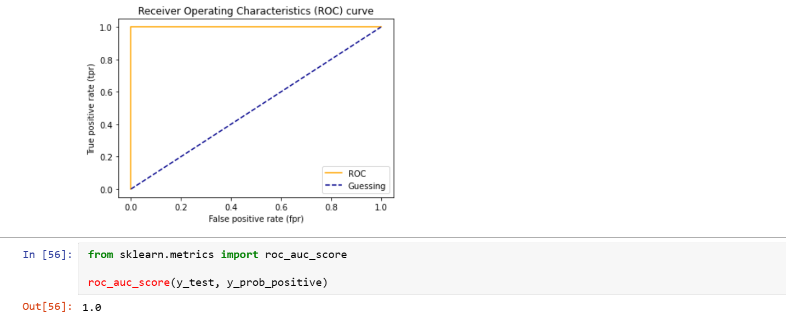
Confusion Matrix
The confusion matrix will help to compare the labels a model predicts and the actual labels it was meant to predict. It reveals where the model is getting confused.
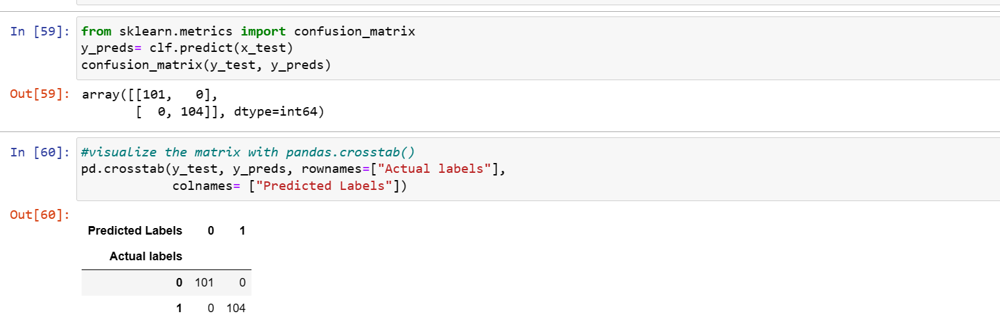
Making the confusion matrix more visual using the Heat Map
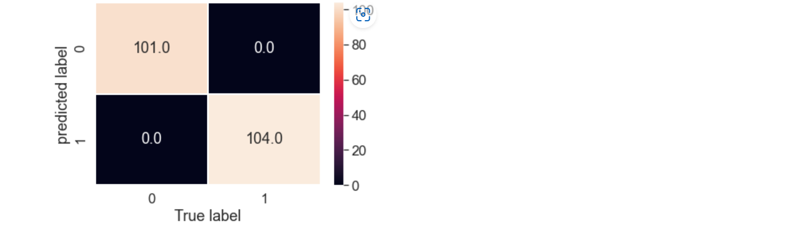
7. Saving and Loading
The pickle module was used to save the datasets to be deployed.
8. Summary of results
A perfect model has an f1-score of 1.00. f1-score of 1.00 is perfect, perfect accuracy is equal to 1.0, we recorded an accuracy of 1.0
*Accuracy is a good measure to start with if all classes are balanced (e.g same amount of samples which are labelled with 0 or 1
*Precision and recall become more important when classes are imbalanced
*if false positive are worse tan false negatives, aim for higher precision
*If false negative predictions are worse than false positives, aim for higher recall.
*F1-score is a combination of precision and recall.
The RandomForest model showed the best performance for this prediction.